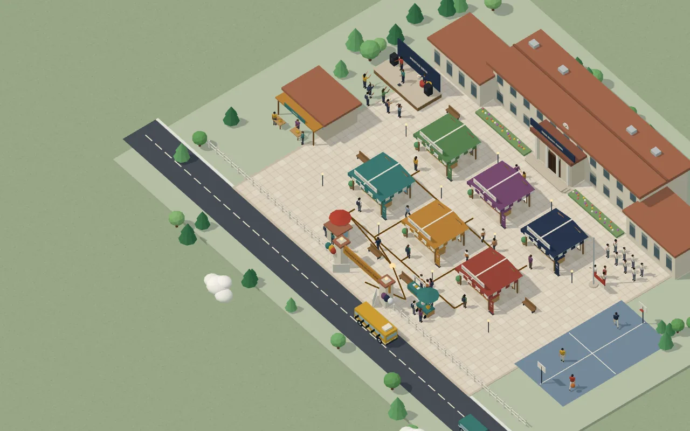

Pekan Karya Bukit Rawa · proyek konsep
Enam karya kelas di satu kampus
Contoh pameran karya sekolah secara daring. Tamu mendaftar di meja registrasi, lalu berkeliling ke tiap stan. Di sisi timur, paskibra mengibarkan bendera. SMA Bukit Rawa adalah sekolah fiktif.
Karya 1 dari 6 · Stan 1
Siklus Air dalam Satu Poster
Menjelaskan penguapan, awan, hujan, dan resapan dengan empat panah berwarna.
Karya 2 dari 6 · Stan 2
Peta Jalur Rempah
Infografis jalur dagang cengkih dan pala dari Maluku ke pelabuhan Eropa abad ke-16.
Karya 3 dari 6 · Stan 3
Maket Rumah Panggung
Skala 1:20 dari karton dan lidi, lengkap dengan tangga dan teras.
Karya 4 dari 6 · Stan 4
Logo Koperasi Siswa
Lima usulan logo, satu dipilih lewat pemungutan suara kelas.
Karya 5 dari 6 · Stan 5
Aplikasi Jadwal Piket
Aplikasi web sederhana untuk membagi piket kelas dan mencatat kehadiran.
Karya 6 dari 6 · Stan 6
Foto Pasar Pagi
Seri enam foto pedagang sayur sebelum pukul enam pagi.
Untuk sekolah Anda
Pameran daring untuk karya sekolah Anda
Karya siswa difoto atau dipindai, lalu ditata di kampus 3D dengan keterangan tiap karya. Harga pameran 3D dihitung lewat penawaran tertulis. Untuk bahan pendukung, PPT tugas mulai Rp 3rb/slide dan logo mulai Rp 75rb.
Proyek konsep: sekolah dan karya di halaman ini fiktif.